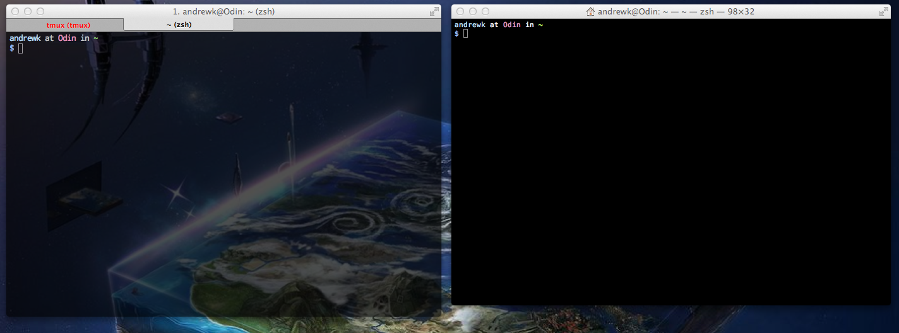

Replacement for Terminal.
Super awesome package manager for OS X.
Prerequisites:
Installation
ruby -e "$(curl -fsSL https://raw.github.com/mxcl/homebrew/go)"brew updateNo more dragging and dropping to install programs.
brew cask install dropbox
brew cask install virtualbox
brew cask install google-chrome
brew cask install sublime-text
brew cask linkapps --appdir="/Applications"